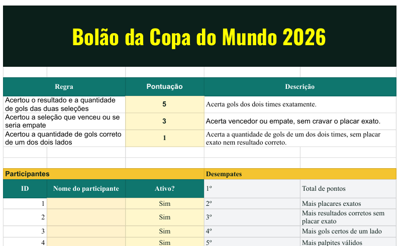
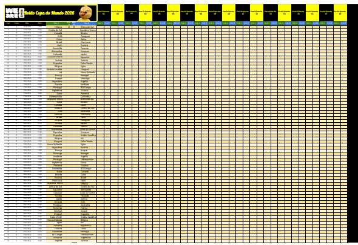
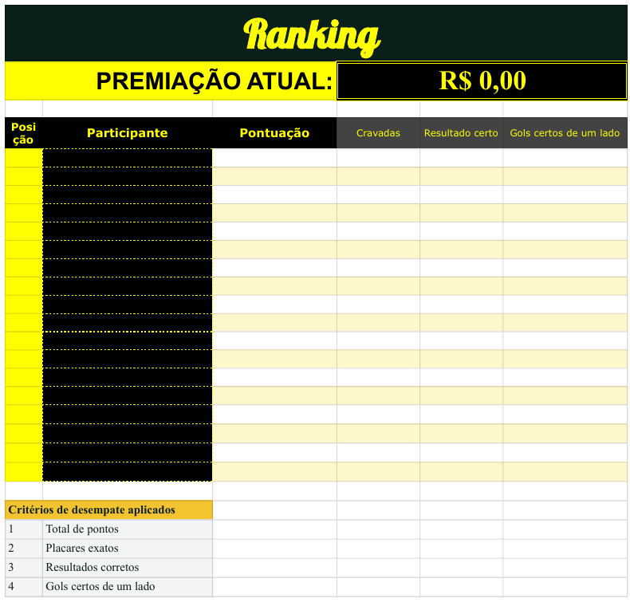

A World Cup pool that keeps score by itself
Twenty colleagues, every match of the tournament, zero manual updates. Built for the whole agency with Google Sheets, JavaScript and a live scores API.
20
participantsEveryone in the agency, not just the football fans.104
matchesEvery game of the tournament, not only Brazil's.0
manual updatesScores arrive from the API; points and ranking recalculate alone.How it works
Predict once. Each participant fills a column with a score for every match before kick-off.
Scores arrive. A script calls a football API as matches end and writes the real result next to the predictions.
Ranking updates. Points and tie-breakers are recalculated and the ranking tab reorders itself.
Scoring rules
| Rule | Points |
|---|---|
| Exact score of both teams | 5 |
| Right winner or draw, wrong score | 3 |
| Right number of goals for one of the teams | 1 |
Tie-breakers, in order: total points, most exact scores, most correct results, most correct one-side goals, most valid predictions.
What it looks like



Why it matters
During a World Cup, a Brazilian agency talks about football all day. This small tool turned that into something shared: everyone checked the ranking every morning, argued about the tie-breakers and followed matches they would otherwise skip.
It was the first thing I built that other people depended on every day.